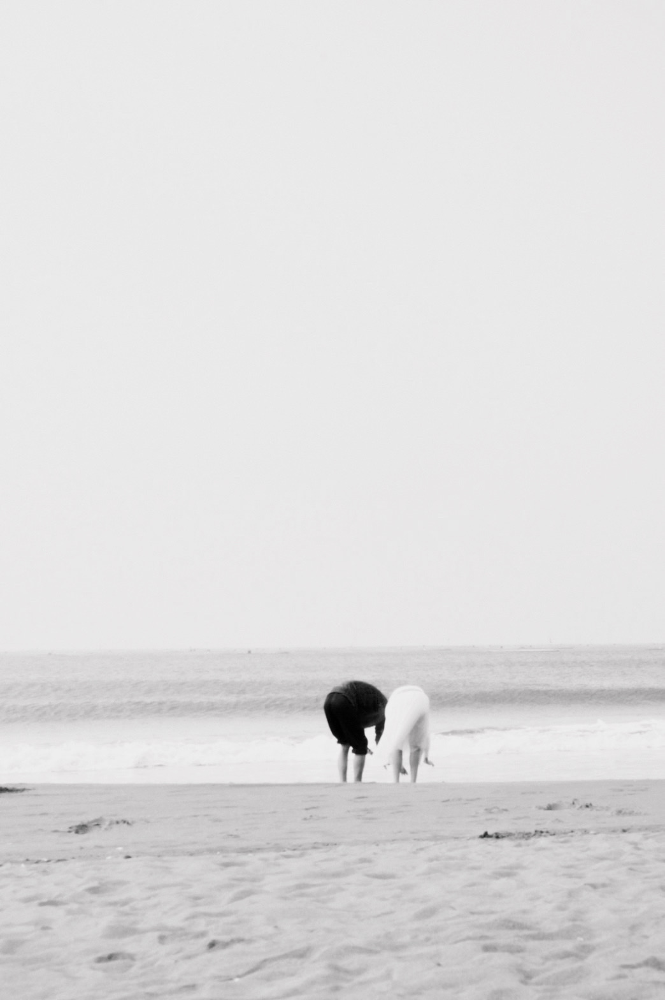
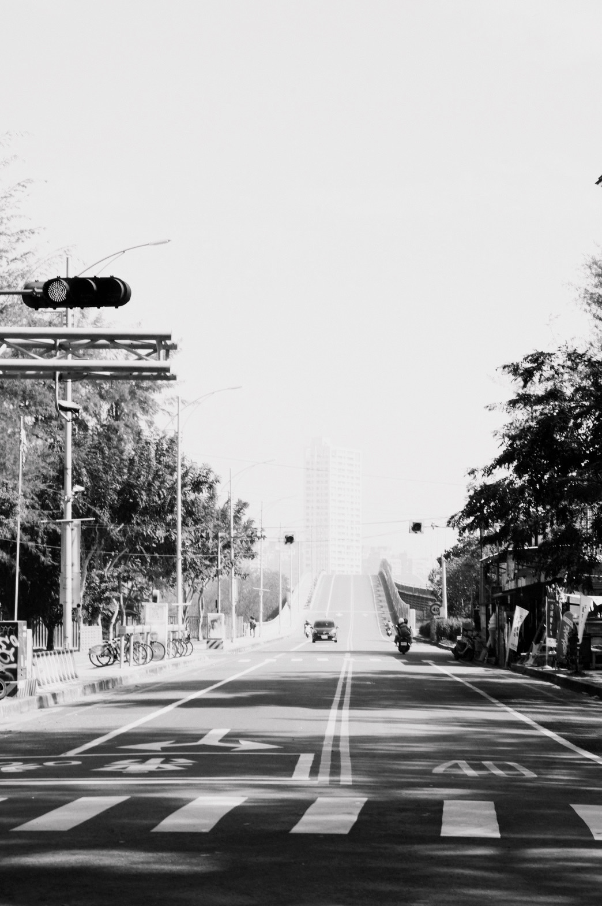
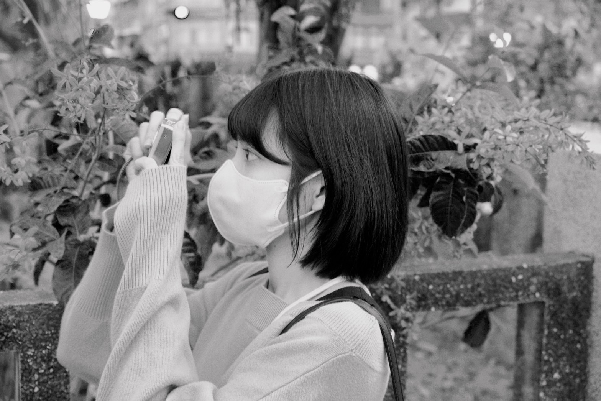

愛
"Love looks not with the eyes, but with the mind, And therefore is winged Cupid painted blind."
- William Shakespeare

空
"The sky was incredibly far away, and beautiful enough to make a person wonder if something so far away could be real."
- Rick Yancey
About me,hey.

I am Who I Am!
Fuji的使用者及底片的愛好者,你呢
如果你也喜愛拍照、喜愛吃美食、喜愛看海，何不加入我的小小星球呢？這個世界充滿了無限的美好，我希望能夠用我的相機，用我的味蕾，將這些美好的瞬間凝固下來，記錄下來，與大家分享。我想要通過我的部落格，與你們一同感受生活的豐富多彩，分享我的視角，帶來一份質感和溫暖。讓我們一起用心去體驗這美麗的旅程吧。